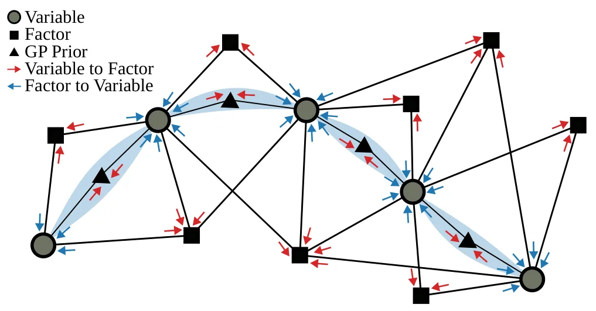
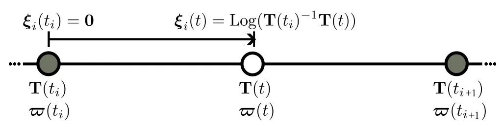
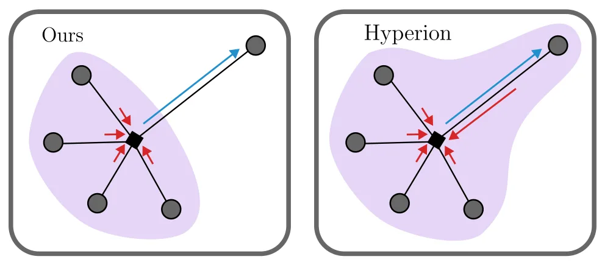
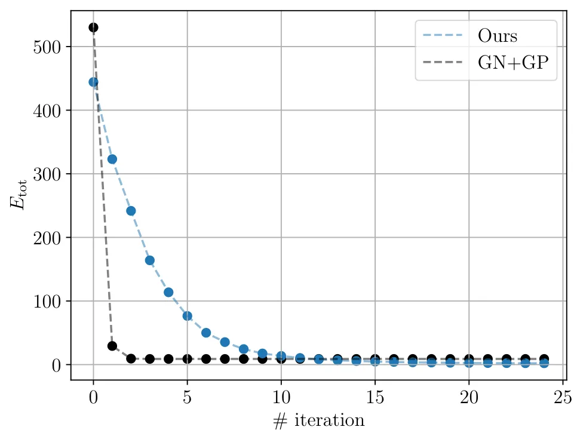
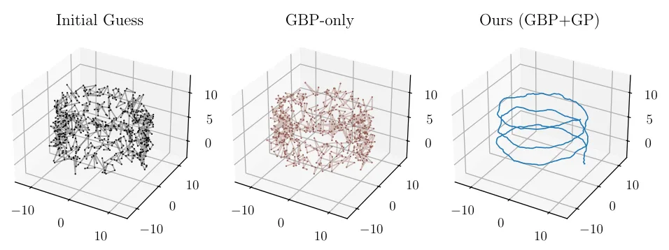
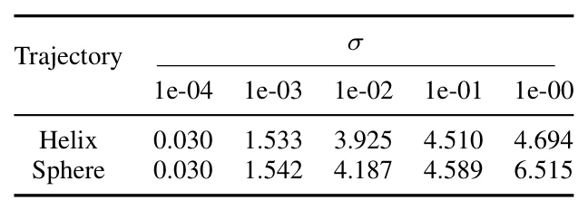
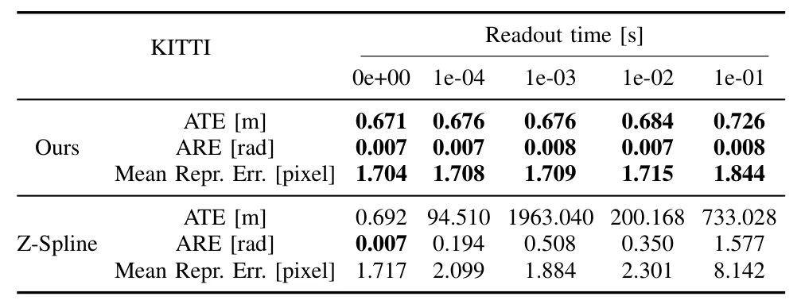

Breaking Time：用于分布式连续时间 SLAM 的全 Gaussian 框架Breaking Time: A Fully Gaussian Framework for Distributed and Continuous-Time SLAM
连续时间建模对 LiDAR/Camera/IMU/GNSS 异步紧耦合很关键，且开源实现值得跟踪。
一句话工作总结
用 GBP 和 GP 运动先验构建可分布式的连续时间 SLAM 求解器，面向异步多传感器轨迹估计。
摘要
论文提出 G-solver，将 Gaussian Belief Propagation 与 Gaussian Process 运动先验结合，用全 Gaussian 表示进行连续时间轨迹估计。该框架能处理滚动快门相机、LiDAR、雷达和事件相机等异步传感器流，并自然扩展到分布式多相机优化，在合成和真实数据上展示了稳定精度与接近现有连续时间方法的运行效率。
Continuous-time SLAM provides a principled framework for fusing heterogeneous sensors while estimating smooth trajectories, and is particularly well-suited for handling heterogeneous, asynchronous sensor streams with non-uniform readout patterns, such as rolling shutter cameras, LiDAR scanners, radar sweeps, or event-based sensors. In this work, we introduce G-solver, a fully Gaussian and distributed framework that combines Gaussian Belief Propagation (GBP) with Gaussian Process (GP) motion priors for continuous-time trajectory estimation. Our GP model provides a probabilistic representation of the trajectory, enabling consistent interpolation and the use of data-driven hyperparameters, while GBP offers a scalable message-passing formulation well-suited for decentralized settings. The resulting solver naturally extends to multi-camera scenarios without specialized synchronization or engineering effort. We evaluate the approach on synthetic and real data, including rolling shutter and distributed multi-camera optimization, demonstrating accurate and stable estimation with runtimes comparable to existing continuous-time methods. An open-source implementation is released.
中文解读摘录
图表/页面预览

{kind=link}

{kind=link}

{kind=link}

{kind=link}

{kind=link}

{kind=link}

{kind=link}
